Performance simulation
Page Overview
The Performance Simulation page provides controls for calculating the optical and thermal performance of the current system geometry at a desired sun position. You can specify a heliostat aiming strategy, the simulation engine (analytical or ray-trace) and associated parameters, and the resolution of output data.
The following keyboard shortcuts are enabled for this page:
F6 Simulate Performance
Simulate Performance
Keyboard shortcut: F6
The Simulate Performance button allows you to execute or cancel a performance simulation. A performance simulation cannot be executed until a field layout has been generated.
The performance simulation consists of evaluating the current heliostat field layout and receiver geometry for optical and thermal performance. SolarPILOT calculates the optical performance of each heliostat to determine the overall field performance.
A simulation requires two steps:
- SolarPILOT generates aim points for each heliostat according to the method selected in the Simulation parameters group.
- SolarPILOT calculates the performance of each heliostat in the layout, and generates information on individual heliostat and total system performance.
Simulation progress is reported using the progress bar and text updates. When running a Hermite (analytical) simulation, progress is reported by "Calculation", and the reported numbers correspond to (current heliostat evaluation / total heliostats to be evaluated). When running a SolTrace simulation, progress is reported by "Stage", where the first stage corresponds to the heliostat field and the second stage corresponds to the receiver. The progress bar tracks the number of rays traced divided by the total number of rays to be traced.
Sun Position
This group allows you to choose the sun position at which performance will be evaluated. Sun position can be specified directly or using a calculator based on the date and time of day.
Simulation time specification method
Choose whether to specify the sun position for the performance simulation directly or using calculated values by date and time.
Sun Position
This option allows you to specify the simulation sun position directly.
Solar azimuth angle
The solar azimuth angle used for the performance simulation. 0=North, 180=South, +90=East, -90=West.
Solar elevation angle
The solar elevation angle above the horizon used for the performance simulation. 0=Horizon, 90=Zenith.
Hour/Day
This option allows you to specify a day of the month, month of the year, and hour of the day at which to simulate performance. The sun position is calculated based on the inputs that you provide and the selected plant location.
Month of the year
The month of the year used to calculate sun position.
Day of the month
The day of the month used to calculate sun position.
Hour of the day
The hour of the day used to calculate sun position. The specified hour may be fractional (e.g. 12.254). The hour should not include daylight savings time adjustments. Hourly time corresponds to local time, and "solar time" may differ depending on plant longitude.
Calculated solar azimuth angle
The solar azimuth angle used for performance simulation. This value is calculated using the hour, day, month and plant location settings.
Calculated solar elevation angle
The solar elevation angle used for performance simulation. This value is calculated using the hour, day, month and plant location settings.
Simulation Parameters
Heliostat aim point method
The heliostat aim point method lets you choose how SolarPILOT determines an aiming strategy for each heliostat in the field. Heliostat aiming strategies are often implemented to reduce the peak flux incident on the receiver surface, but typically incur reduced optical efficiency due to spillage loss from the receiver. The methods implemented in SolarPILOT allow you to choose the balance between flux distribution over the surface of the receiver and optical efficiency loss. Each method is described in more detail below.
Simple aim points
The simple aim point method focuses all heliostats at the centroid of the receiver as viewed from the heliostat. For flat plate receivers, the simple aim point is at the vertical and horizontal mid point. For cylindrical receivers, the simple aim point is at the vertical midpoint of the receiver at the circumferential point on the receiver nearest to the heliostat. The simple aim point method for cylindrical receivers forms a "belt" of flux around the receiver.
Cylindrical Receiver |
Flat Plate Receiver |
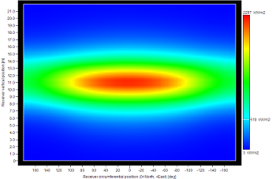 |
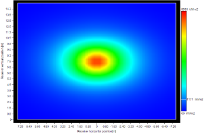 |
Sigma aiming
The sigma aiming method is implemented only for cylindrical receivers.
The sigma aiming method positions heliostat images at a distance from the upper and lower receiver edges based on the vertical length of the image. Each heliostat image has a primary width and height value that SolarPILOT calculates using the Hermite analytical engine. The vertical length value for each heliostat is multiplied by the positioning cutoff value to determine the edge offset distance. The images are offset from the upper or lower edge in an alternating pattern (i.e. the first heliostat is offset from the upper edge, the second from the lower edge, the third from the upper, and so on). If the offset distance is more than half of the total receiver height, the heliostat is positioned at the vertical centerline of the receiver.
The sigma aiming method is deterministic and yields the same flux distribution on repeated simulations.
Positioning cutoff (standard deviations)
The positioning cutoff value is a multiplier on the standard deviation of the image size when approximated as a Gaussian distribution. The multiplier scales the total offset distance of each heliostat from the upper or lower edge of the receiver.
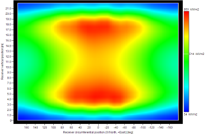
Probability shift
The probability shift aiming method is implemented only for cylindrical receivers.
The probability shift aiming method incorporates random sampling from a statistical distribution that you specify to determine the vertical displacement of each heliostat image. Each image is offset vertically from the centerline of the receiver, and the extent to which the image is offset is determined by the image's primary vertical length, the positioning cutoff factor, and a factor that has been randomly sampled from a distribution that you define. The allowable range for vertical displacement is restricted according to the vertical length of the image. Each aim point must be offset from the upper or lower receiver edge by at least a distance equal to the image's vertical standard deviation times the positioning cutoff factor. Within the remaining span, the aim point vertical position is determined by sampling from a statistical distribution.
The following graphic illustrates the method. An image with standard deviation equal to σy can be positioned within a window of Hrec/2 - 2σy away from the receiver centerline. The final position within that window is determined by random sampling from a normal distribution (in this case). The positioning cutoff factor is equal to 2.0.

The probability shift aiming method is probabilistic and may yield varying results on replicated runs.
Positioning cutoff (standard deviations)
The positioning cutoff factor multiplies the primary vertical length of the image to scale the heliostat aiming position offset from the edges of the receiver. As the positioning cutoff value increases, the offset distance between the heliostat and edges increases.
Aim point distribution sampling
The probability shift aiming method uses random sampling to assign heliostat vertical displacement. You can choose the shape of the distribution to be either triangular, normal, or uniform.
Triangular
The triangular distribution has probability density equal to zero at the receiver centerline and a probability density of 1 at the maximum offset distance for each image. Images are therefore more likely to be placed close to the outer edges of the receiver.
Normal
The normal distribution is centered at half the maximum offset distance for each image and has a characteristic width (standard deviation) equal to the Aiming distribution standard deviation that you specify.
Aiming distribution standard dev.
The standard deviation of the aiming random sampling distribution. The standard deviation magnitude is scaled relative to the size of the placement window.
Uniform
The uniform distribution has probability density equal to 1 at any point within the allowable placement window. The position of the aim point is random and unweighted within the allowable range.
Normal distribution |
Triangular distribution |
Uniform distribution |
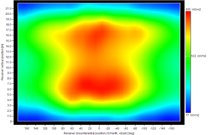 |
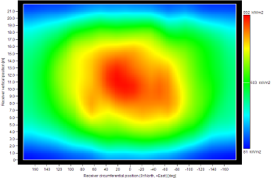 |
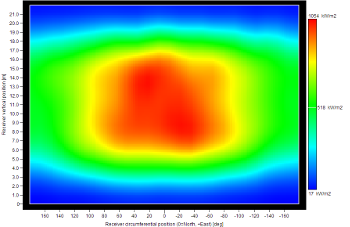 |
Image size priority
The image size priority aiming method is implemented for both flat plate and cylindrical receivers.
The image size priority aiming method determines heliostat aim position by sequentially placing heliostats on the receiver at points of lowest flux. The order in which images are placed is determined by the size of the image as it appears on the receiver. Therefore, images with significant distortion or at long distance from the receiver are typically placed first. After each heliostat placement, SolarPILOT identifies a local minimum in the flux intensity and locates the subsequent heliostat at that position.
Heliostats aim points are placed within an allowable region that is determined by the size of image and the positioning cutoff value. The allowable region is offset from the edges of the receiver equal to a distance that is the product of the image size standard deviation times the positioning cutoff factor. As the image size or positioning cutoff factor increases, the allowable placement region contracts.
Positioning cutoff (standard deviations)
The positioning cutoff factor multiplies the primary vertical length of the image to scale the heliostat aiming position offset from the edges of the receiver. As the positioning cutoff value increases, the offset distance between the heliostat and edges increases.
Keep existing
You can keep the existing aim points for a heliostat field by selecting this option. The aim point on the receiver will remain unchanged as heliostat tracking position changes or as other non-layout geometrical changes are applied.
Freeze tracking
This option allows you to keep the heliostat tracking position unchanged as
Aim Point Strategies with SolTrace SolarPILOT establishes aim points using elements from the analytical model of the image shape for each heliostat. For this reason, it is not possible to implement aiming strategies using the SolTrace ray-tracing engine in which the image shape is not known until after the simulation has completed. However, it is still possible to simulate a heliostat field with an aiming strategy using the SolTrace engine by following the steps outlined below: A) First, select the Hermite (analytical) option in the Simulation parameters group. Choose an aiming method and set the appropriate parameters. B) Execute the performance simulation using the analytical engine. This will establish aim points for each heliostat. C) Change the selected heliostat aim point method to Keep existing. This option prevents any update to the heliostat aim points when running a performance simulation. D) Now select the SolTrace option in the Simulation parameters group. Configure the ray-tracing parameters as needed, and run the simulation. SolTrace will evaluate performance using the aim points that are stored from the previous analytical run. |
Flux Simulation Model
The flux simulation model specifies the engine that is used to evaluate plant performance. You can use either the analytical Hermite polynomial model or the numerical SolTrace model.
The choice of simulation model affects the available aim point strategies. Refer to the Aim Point Strategies with SolTrace discussion to learn more.
Hermite (analytical)
The Hermite (analytical) model estimates the distribution of reflected light from each heliostat using a modified Gaussian equation and a truncated polynomial Hermite series expansion. For more information on this modeling method, refer to:
- Walzel, M. D., Lipps, F. W., & Vant-Hull. (1977). A solar flux density calculation for a solar tower concentrator using a two-dimensional Hermite function expansion. Solar Energy, 19, 239–256.
- Dellin, T. A. (1979). An improved Hermite expansion calculation of the flux distribution from heliostats: SAND79-8619. Livermore, CA: Sandia National Laboratory.
The analytical engine's primary advantage is its computational efficiency but inherently has several limitations.
Analytical Engine Limitations
1) Images are modeled using a 2-dimensional Gaussian equation and a Hermite polynomial series that modifies the Gaussian form. Although an infinite series polynomial can theoretically model any functional form, the truncated series includes 7 terms and thus is limited in the functional forms that can be replicated. Most image shapes can be reproduced accurately, but as images deviate from the Gaussian form, error may increase.
2) The sunshape model describes the intensity of solar irradiance as a function of the radial distance from the centroid of the sun. The sunshape profile includes a region of intense light, a region of rapidly diminishing intensity, and a region of minimal intensity. As user-specified sunshape profiles increase the fraction of light contained within the solar disc, the accuracy of the analytical model can decrease.
SolTrace
The SolTrace engine is a generalized Monte-Carlo ray tracing tool for solar applications. SolTrace models power tower systems by projecting rays from the sun onto the heliostat field and tracing the reflection. For more information on this modeling method, refer to:
- Wendelin, T. (2003). SolTRACE: A New Optical Modeling Tool for Concentrating Solar Optics. ASME 2003 International Solar Energy Conference. Kohala Coast, HI.
Although SolTrace is a general-purpose ray-tracing tool, SolarPILOT has adopted it for use in power tower systems. SolarPILOT automatically translates the input that you provide into model parameters and geometry in SolTrace. SolarPILOT follows the procedure outlined below to create and execute SolTrace simulations:
- The sun shape distribution is tabulated to match the form specified in SolarPILOT. The table of irradiance intensity as a function of angular displacement from the center of the solar disc is passed to the SolTrace engine.
- The optical errors on the Heliostat page are separated into surface errors and normal vector errors. Surface errors include specularity in the x and y directions, and the total surface error is equal to:
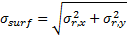
and the total normal vector error is equal to:
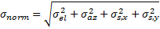
where:
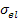 |
rad |
Elevation pointing error |
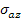 |
rad |
Azimuthal pointing error |
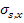 |
rad |
Surface slope error in X |
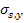 |
rad |
Surface slope error in Y |
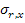 |
rad |
Reflected beam error in X |
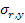 |
rad |
Reflected beam error in Y |
- Heliostat geometry is created in "Stage 1" with orientation corresponding to the specified performance simulation sun position.
- Receiver geometry is created in "Stage 2".
- SolarPILOT invokes the SolTrace engine through an API and collects the ray intersection data from the simulation.
- SolarPILOT processes the ray data to determine the optical losses in the heliostat field and receiver, the flux intensity on the receiver, and the overall performance of the plant.
Desired number of ray intersections
The number of rays that strike the receiver. This value determines the number of intersections that are required before the SolTrace simulation can terminate. For multi-threaded simulations, the number of rays may not exactly match the specified value.
Maximum number of generated rays
The maximum number of sun rays that can be generated before the simulation is terminated.
Seed value (-1 for automatic selection)
The seed value for randomization of the ray generation process. A value of -1 indicates that a random seed will be used. This implies that any two successive simulations will yield different results. As the number of rays increases, the effect of simulation randomization will converge to a single result. If a seed value other than -1 is specified, subsequent simulations are replicates.
Optical errors
Specify whether to include sources of optical error in the SolTrace simulation.
Include sun shape
Specify whether sun shape effects should be included in the SolTrace simulation. If disabled, the sun is modeled as a point source and all generated sun rays are collimated.
Include optical errors
Specify whether heliostat optical errors should be included in the SolTrace simulation. If disabled, the reflected angle of an incident ray on a heliostat surface is equal to the incident angle.
Save all raytrace data
Specify whether a data file containing all ray generation and intersection information should be saved to disk.
Export SolTrace .stinput file
This button allows you to create a SolTrace input file (.stinput) that can be opened and modified by the SolTrace interface. When creating the file, SolarPILOT will automatically generate heliostat and receiver geometry with an orientation corresponding to the sun position specified on the Performance Simulation page, and the heliostat and receiver stages inherit the optical properties specified on the Heliostat and Receiver template pages. SolarPILOT generates a sunshape profile according to the settings on the Climate page.
Save heliostat stage ray data
Specify whether rays that are reflected to the receiver by the heliostat stage are saved to a file. When this option is enabled, SolarPILOT will save all rays from the heliostat field to a file that can be re-used in future simulations without requiring simulation of the heliostat field.
Load existing heliostat ray data
Specify whether rays saved using the "Save heliostat stage ray data" option should be loaded in place of a full solar field simulation. When using this option, SolarPILOT will load ray data and use it in place of a full heliostat field simulation. Receiver geometry for a simulation with loaded data does not need to correspond to receiver geometry from the simulation in which the rays were originally generated.
Ray data file
Specify the location of the ray data file for the save or load operation.
Flux grid resolution - Horizontal
The number of evaluation positions for flux intensity in the horizontal receiver direction. As this number increases, the resolution of flux evaluation increases.
For ray trace simulations, increased resolution corresponds to increased uncertainty in reported local flux density.
Flux grid resolution - Vertical
The number of evaluation positions for flux intensity in the vertical receiver direction. As this number increases, the resolution of flux evaluation increases.
For ray trace simulations, increased resolution corresponds to increased uncertainty in reported local flux density.
Clouds
Heliostat Selection Control
Created with the Personal Edition of HelpNDoc: Create help files for the Qt Help Framework